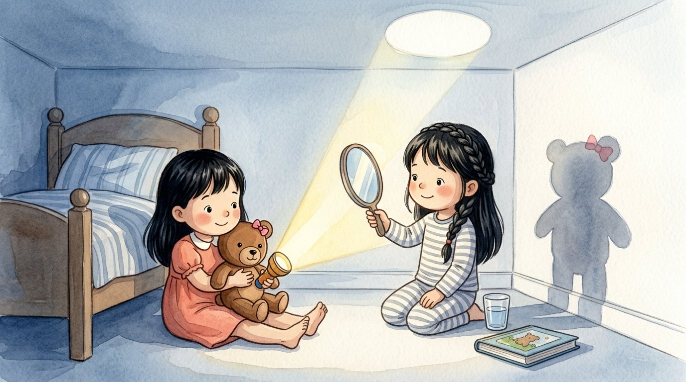

Grade 1 · Science · 1-PS4-3
What lets the light through?
A story about materials that let light through, block it or bounce it.
Three new words
It lets light through; you can see through it.
It does not let light through.
It bounces light back and shows your reflection.
Tap a picture to hear the word and what it means.
The story
Génesis and Lucía were playing with a flashlight next to the wall.
They put a glass cup in front of the light.
The light went through the cup! The glass is transparent.
Next, they put a piece of wax paper there.
A little light went through, but the spot on the wall looked blurry.
Then they put a book there.
The light could not go through, and a shadow appeared on the wall. The book is opaque.
Génesis put her teddy bear in front of the light.
“Look, my teddy bear’s shadow has a bow!” she laughed.
Last, Lucía held up a mirror.
The light bounced and made a bright circle on the ceiling.
Some materials let light through, some block it, and some bounce it.
Questions
Listen to the question and tap the right picture.
-
Question A. What happened to the light and the glass cup?
Glass is transparent: it lets light through.
-
Question B. Why did a shadow appear when they put the book there?
The book is opaque: it blocks the light and makes a shadow.
-
Question C. What did the mirror do with the light?
A mirror bounces light back.